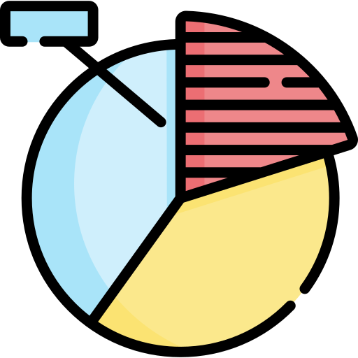
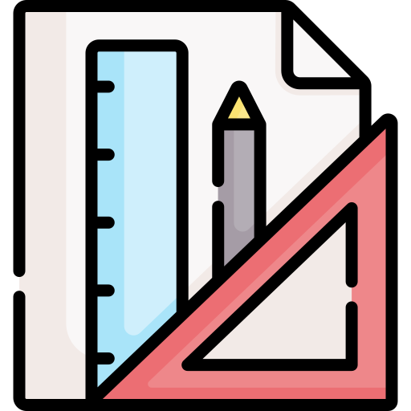

Hi, I'm Daniela
I'm a mixed-method User Researcher based in Ontario, Canada. I combine qualitative depth with quantitative rigour to help multi-disciplinary teams embed user needs into product strategy. My website gives more details about the types of research I do, how I do it, and the impact it has on product decisions.
Explore my academic projects and resume for more details. Want to connect? I'm happy to dive into anything listed here.
How I can help
Quantify product design ROI and shifts in competitive advantages over time.
My benchmarking work
Drive product decisions with data from large-scale surveys of user needs and attitudes.
My survey work
Inform early product directions through in-depth exploration of problem spaces.
My discovery workDe-risk design decisions by validating user needs with wireframes and prototypes.
My concept testing workUncover user pain points and improvement opportunities through product assessments.
My usability testing work
Leverage expertise from academia for complex product challenges.
My research foundations